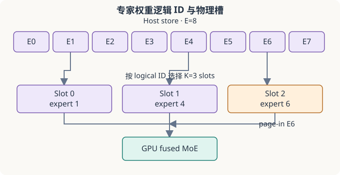
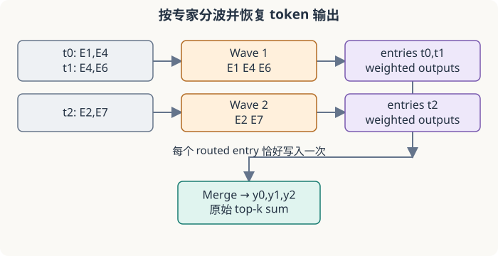

第 34 章 · SGLang 高级机制
Paged Experts：逻辑专家、物理槽与 Waves
MoE 专家超出 GPU 容量时，如何按路由装载权重而不改变计算？
EP 把不同专家的参数和计算分散到多个 GPU，token 需 dispatch/combine。Paged Experts 则通过 host-backed weights 让 GPU 只保留部分专家，按实际 routing demand 换入。这里迁移的是专家参数，不是 token activation，也不是 KV page；专家 GEMM 仍在 GPU。
1. 为何不是 Expert Parallelism 的另一个名字
EP 把不同专家的参数和计算分散到多个 GPU，token 需 dispatch/combine。Paged Experts 则通过 host-backed weights 让 GPU 只保留部分专家，按实际 routing demand 换入。这里迁移的是专家参数，不是 token activation，也不是 KV page；专家 GEMM 仍在 GPU。
2. K-slot table 与 logical expert ID
某层 E=8，K=3；逻辑专家 ID 0…7，GPU 只有 slot 0…2。Host 保存经过相应 loader 和 post-load layout 处理的专家 tensor rows。若路由选到 expert 6，不能直接把 6 作为 slot 下标；必须查 residency map，缺失则选择非当前 wave 的可驱逐槽并搬入权重。

3. Wave 规划与精确合并
本步 token0 选专家 1、4，token1 选 4、6，token2 选 2、7，共 U=5 个 distinct experts。K=3 时可以用 wave {1,4,6} 与 {2,7}；每条 routed (token, expert) entry 只由所属 wave 计算一次。保留原 router weights，最终按原 top-k entry 合并；不能逐 wave 单独重新 softmax。

4. 成本与容量
每层每个专家 tensor payload 为 w，忽略共享专家、scale、workspace 和 metadata：持久 GPU 专家权重约 K×w，host 约 E×w。若本步 U 个 distinct experts，至少 ceil(U/K) waves；实际搬运量取决于驻留与波次安排。以 8 experts、3 slots、每专家 10 MiB 为例，GPU 30 MiB，Host 80 MiB，并非整模型节省 62.5%。
5. CUDA Graph 与动态路由的冲突
若 tokens×top_k≤K，则不论实际 route 分布都能装在一波；这是充分条件，不是必要条件（大量重复专家也可一波）。官方实现捕获此有界 decode 路径，在 GPU 生成 page-in plan，再用复制 kernel 搬入所需权重；更大的 batch 走未捕获路径。Prefill 多 wave 在 breakable graph 中可作为 eager break。
6. 磁盘层、格式与启动路径
可选 disk tier 将不能全部装入 pinned host 的专家存入逐层文件；读取可能等待，影响关键路径，并与 replay、recurrent state 恢复及其他功能组合有约束。不要把 CUDA、ROCm、NPU 等所有平台视为同等支持；按该版本 docs 的 Supported Configurations 及实际 runner/quantization 检查。
7. 性能反例与生产调优
在小 batch 且相邻 token routing 热点重叠时，K 个槽可较少换入；若 large prefill 触达接近全部 experts，wave 数和 PCIe IO 可能支配耗时。增加 K 会减少 page-in 却压缩 KV budget。测量 distinct experts、resident hit、wave 数、传输字节、TTFT/ITL、KV tokens 与 host/disk 峰值，不把官方某个硬件结果推广到所有模型。
8. 交互：改变机制状态
专家权重驻留状态选择
U=2，K=3：路由 {1,4}，若两者已驻留则无 page-in，1 wave。
U=5，K=3：{1,4,6} 与 {2,7}，至少 2 waves；每 entry 恰好计算一次。
K 增至 5：U=5 可一波，但每层多占 2w GPU 权重空间，KV 容量随之减少。
上述均为教学数值；不代表 GPU benchmark。
9. 可执行 CPU 实验
下载 paged_expert_waves.py，使用 Python 标准库执行。实验验证离散状态与边界，不调用真实 SGLang engine 或 GPU kernel。
python3 examples/paged_expert_waves.py测试包含正常输入和不变量检查，具体断言见源文件。
10. 源码阅读路线与适用边界
固定上游实现快照 75ed36d976113c693f8e6f64925e119573a93fda。以下是源码与官方文档入口；教学公式是显式假设下的推导。
- The K-slot table and the host store：Paged Experts uses K physical device expert slots per layer and host-backed expert tensors; GPU computation remains on the GPU.
- Wave / LRUPolicy / plan_waves：Residency planning partitions routed experts into waves and uses LRU placement.
- EagerExecutor._run / _run_waves：The eager executor runs waves and merges routed entries.
- Captured decode / Disk tier：Captured single-wave decode has sufficient condition tokens × top_k ≤ K; optional disk tier and graph constraints are version-specific.